Starter-Kit
These starter kits empower you to map your first line of the electrical transmission grid and other power infrastructure you will find along the way. If you ever get stuck or would like to provide feedback, please contact us via our community chat or via email. A MapYourGrid community member will help you finish your first line and set up your environment.
We recommend JOSM (Java OpenStreetMap) editor generally, particularly for large-scale grid mapping and to inspect the electrical grid. However, if you only want to make minor edits or leave notes without installing anything, the iD editor provides a user-friendly mapping experience. iD and JOSM can both be combined with Open Infrastructure Map. MapComplete provides an optimised workflow for mobile devices for mapping missing tags, such as voltages or capacities. These tools also offer enhanced usability for field mapping tasks and data validation. You can follow our tutorials on this website, or watch our video tutorial for JOSM!
Get started by clicking on one of the OpenStreetMap editors:
iD Starter-Kit
Have you spotted some power towers, power plants, issue or substations near your place that are still missing and want to quickly map them yourself? This can be done on your mobile device or PC using the iD editor. In this way, you can also correct voltages, circuits, or other errors you see in Open Infrastructure Map.
The native iD OpenStreetMap editor offers a simple, user-friendly interface that is perfect for beginners or those who want a quick overview of electrical grid mapping. Its simple user interface and web browser integration also make it possible to use this editor on mobile devices, enabling field mapping and validation tasks to be carried out on the ground.
Check out our starter-kit video tutorial for iD
Map your Good First Line with iD
For those who prefer iD to JOSM or are new to OpenStreetMap and electrical grid mapping, the following starter kit provides a quick introduction to mapping your first Good First Line. While it is possible to map transmission lines on a mobile device, this is best done on a PC with a mouse.
{kind=link}
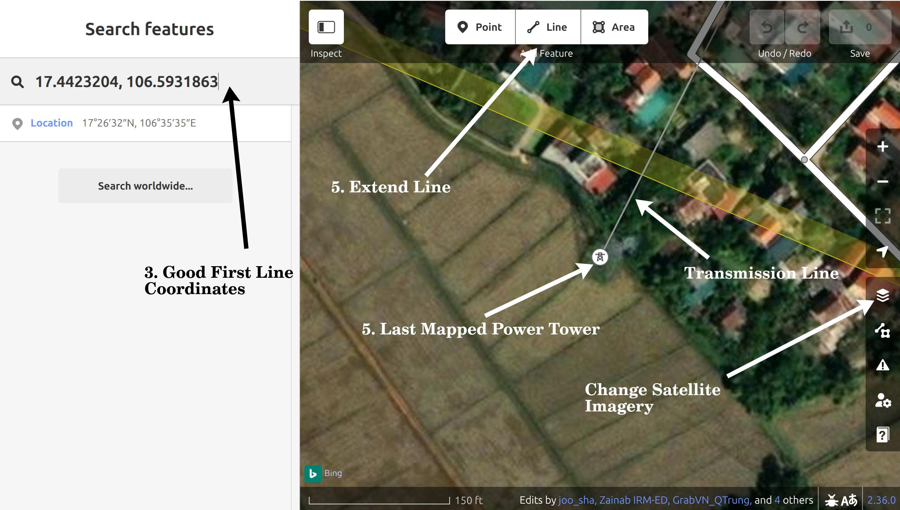
{kind=link}
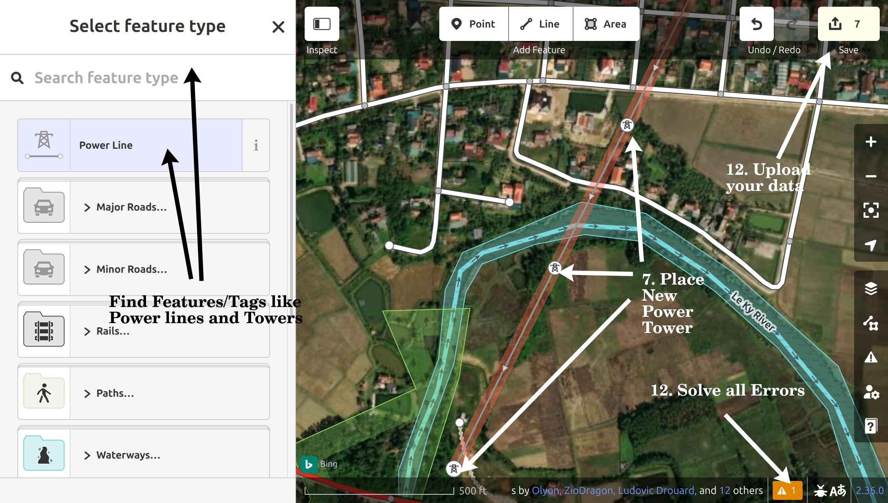
{kind=link}
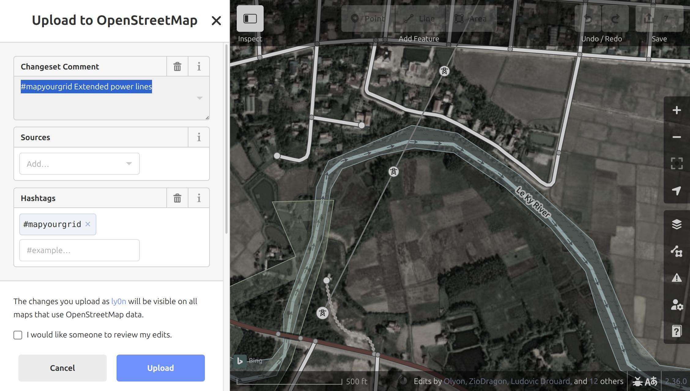
{kind=link}
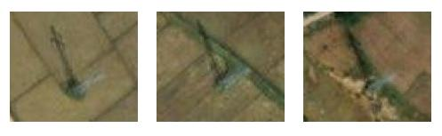
{kind=link}
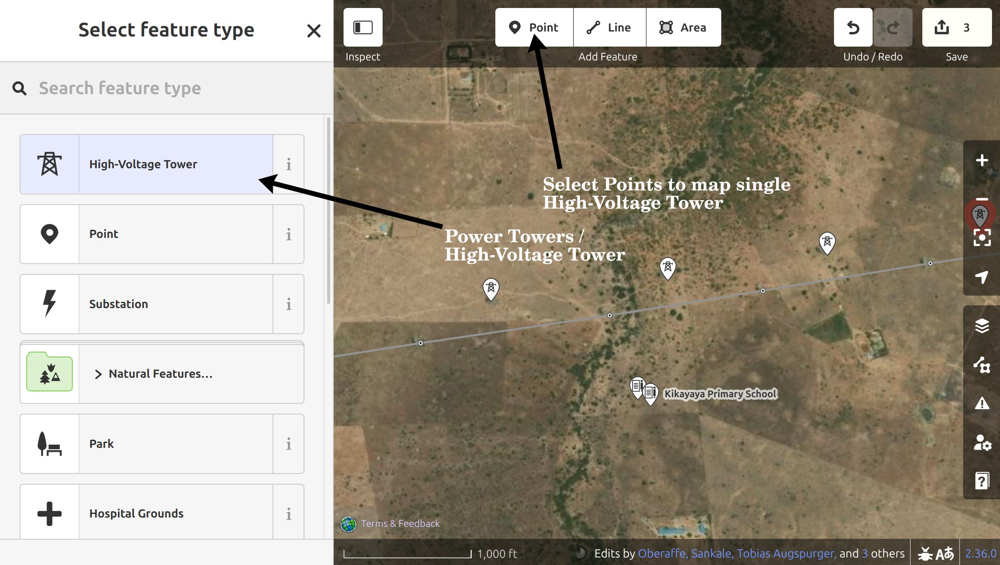
- Create an OpenStreetMap account and log in.
- Select a
Good First Linefrom the following list, then click onid Editor: Good First Lines - This will open a tab within the edit mode of the iD editor, and move you to the location of the
Good First Lineyou selected. You should now see a transmission line mapped with the open end at a power tower. - iD will show you all OpenStreetMap data and with
BingorESRIsatellite imagery underneath. Depending on your region, you might want to switch to different satellite imagery by pressing theBackground Settingbutton in the right panel, in case the imagery doesn't show the Power Towers. - To extend the power line, you can simply press on the last Power Tower and click
Aon your keyboard to extend the current line. If you don't want to extend the line and instead create a new line, you can also click on theLinebutton in the top panel and afterwards on the last power tower symbol next to the coordinates. - Now, search for the next Power Towers. Looking at how the previous power towers looked will give you an idea of what the next one will look like. Most lines are straight and an equal distance apart. If you cannot see the previous power towers, you may need to switch to satellite view. Don't worry if you miss a power tower. Such issues are automatically detected, so another mapper may spot it.
- Place a new
nodeat the base of all the power towers along theway, continuing as far as you can find new towers. - Next, you need to tag the line and nodes correctly. To do this, first press
Escand then click on the way you have just drawn. In the left panel you can now edit theFeature. Press on theLinesymbol and search forPower Line, if the line hasn't already been tagged hasPower Line. - With your new Power Line still selected pressing
CTRL + ↓will select all thenodesalong yourPower Line. - Now in the left panel, go back to the search field and search for
Power TowerorHigh-Voltage Tower. - Press on it, and all you nodes will become
Power Towers. If you zoom in, you should now see thePower Towernow along the line. - Once you finished your mapping session, resolve all warnings, issues and errors in your data by clicking on the ⚠️ symbol in the bottom right corner.
- Now press the
Savebutton in the right upper corner. Provide a very short decription what you have done in the Changeset comment, including a#MapYourGridhashtag. - Finally press Press
Upload. Congratulations! You have just mapped your very first transmission line.
Sometimes, there are several possible options for line routing and it is unclear where the transmission lines actually go. In these cases, it is perfectly acceptable to simply place power towers. You can't go wrong by placing power towers. Another more experience mapper will see your towers and finish the line.
- Create a
Pointwhere you can see the power tower with the button in the top middle panel. - Make it a
High-Voltage Toweraka power tower with the feature panel on the left side. - Copy the Power Tower with
CTRL+Cand place it where you see more power towers.
Where to go next?
- Do you want to find and map further open ending transmission lines in your country using iD? Check out our find open-ended Transmission Lines with Osmose in iD workflow.
- Would you like to learn how to map power plants or substations with iD? Or are you interested in finding out how to use iD for in-field mapping? Check out our further iD and Open Infrastructure Map Starter Kit
Warning
In some countries, mapping power lines is restricted. Always verify local guidelines, connect with the OSM local community first, or check out the local communities and local projects. If you can't find a local community, please send us an email and we will help you set up a local group.
By following our Good practices for mapping, we collectively protect the integrity of the OSM platform, foster trust with communities, and unlock the power of open data for a more resilient and just energy future. Please be aware that the OpenStreetMap community and foundation does not technically limit the mapping in any place on the globe. Therefore, our Good practices for mapping cannot be enforced for volunteer community mappers either.
JOSM Starter-Kit
Check out our starter-kit video tutorial for JOSM


1. Install and Configure JOSM 
- Install JOSM using the recommended instructions for your machine.
- Link your OSM account to JOSM. To do this, go to
Edit → Preferences → OSM Serverand select "Authorise". Login (or sign-up) with your OSM account. Your OSM account should now be linked. On macOSPreferencescan be found underJOSM → Settings - Enable
Remote controlinEdit → Preferences → Remote Control. This allows for grid data to be loaded automatically from the browser into JOSM. Please note that Safari does not support remote control. You will need to use a different browser to make this work. - Enable
Expert ModeView → Expert Modeto enable search function that you will need. - Understanding JOSM layers. JOSM works with stacked layers, similar to Photoshop or GIS tools:
- You’ll typically have an OSM data layer, imagery layers, and optionally GeoJSON or task layers.
- You can switch between multiple satellite imagery sources (for instance, Esri, Mapbox) to use the clearest one for your area.
- Load your Satellite Imagery via
Imageryand selectBing aerial imageryandEsri World Imagery. In theLayerswindow on the right hand side you can nowShow/hidethe different imagery by clicking on the eye. This is also where you will load additional data layers. Changing the order of the data and imagery allows you to combine and overlap the different data sources. Some countries, such as Japan, South Africa and Germany, have their own high-resolution imagery in JOSM. If you are mapping local imagery will automatically be visible underImagery.
Warning
In some countries, mapping power lines is restricted. Always verify local guidelines, connect with the OSM local community first, or check out the local projects. If you can't find a local community, please send us an email and we will help you set up a local group.
By following our Good practices for mapping, we collectively protect the integrity of the OSM platform, foster trust with communities, and unlock the power of open data for a more resilient and just energy future. Please be aware that the OpenStreetMap community and foundation does not technically limit the mapping in any place on the globe. Therefore, our Good practices for mapping cannot be enforced for volunteer community mappers either.
2. Setup your Presets and Quality Assurance Rules


- For ease of mapping, customise your top toolbar with presets if you have not used the default preferences. Right click the toolbar and choose
Configure toolbar(or alsoPreferences → Toolbar). Then on the right, selectPresets → Man Made → Man Made/Powerand addPower Towers,Power Portal,Power Substation,Power Plants,Power LineandPower Generators, by pressing the button in the middle to add these to your toolbar. These are the main objects you will need for transmission grid mapping. You can also remove the presets you won't use. - Another important Preset your will need is
Add Node. You will find it underTools→Add Node. - When you open a new layer later in the tutorial, the toolbar will stop being grey.
- Optional - for more experienced mappers we recommend integrating our validation rules. Add MapYourGrid additional quality assurance rules:
Preferences → Data validator, on theTag checker rulestab, search forPower QA, click on the item in the list, and then on the arrow in the middle of the window to add it to your active rules. These validation rules will help you identify and correct any errors that may have been made. JOSM will run these checks before publishing your data and will display any points requiring verification. Please review them and try to fix them to ensure that the data we produce is usable. You can find more information and explanations about these rules on the wiki.


3. Add Visual Clarity with Custom Map Styles 
- In JOSM, go to
Edit → Preferences → Map Paint Stylesand press the "+" in the top right. - Paste this URL, or download the raw file on your device, and add it.
- Make sure the style is active in the Map Paint Styles menu. You can check this with
Windows → Map Paint styles.
Optional steps for an even better visual experience :
- To quickly see which voltages are used in a region and to filter lines with specific voltages the auto filters in JOSM can be very helpful. Press
Edit->Preferences->OSM Data. Go to 'Other Options', activate 'Use Auto Filters' and select 'Rule Voltage [5]' from the drop-down menu. You will now see multiple buttons in the top left corner showing the voltages in the view. Click on a voltage to filter by it. - Not all grids are made the same. Use this MapCSS file for low-density grids, or this one for high-density grids.
- You can check ColorMyGrid, our MapCSS Generator tool, to easily adapt the MapCSS file to your needs. The raw data to edit the map legend is in the ColorMyGrid repo.
4. Let's map! Choose a Good First Line
Our community is constantly investigating transmission lines that are suitable for beginner friendly mapping experiences. Simply select a 'Good First Lines' from the following page, and tick it if you have started/attemped mapping it. For now, just keep in mind in which country (or region) your picked 'Good first line' is in, as the next step is to load that countries' grid! Select a Good First Line from the following page:


5. Load Power Infrastructure into JOSM 
- Make sure remote control is enabled and ad-blocker disabled, and then go to the start mapping page, but come back to this page to read the instructions below!
- Here you can click on the country you want to map, and it will directly open JOSM and load the data of that country. The "Default Transmission (50 kV+)" data should already be selected when you open the page. Now press the country, region/state/province of the
Good First Lineyou would like to map. To load data for regions/states/provinces, simply zoom in further until the border becomes visible (only works for certain countries for now!). - The data should now automatically appear in JOSM. In the
Layerwindow on the right handside you should see theData Layer, which is automatically named with the country/region you pressed on. The ✅ on the left of the Data Layer should be visible, indicating that this is the active layer. All your edits in the main windows will now be part of thisData Layer. - Familiarize yourself with the grid data, click on the lines and substation to inspect the tags and memberships in the window in the right side.
- Bonus: You can download the data in the editor from the 'Data Layer' in the top right-hand corner. Simply right-click on the layer name and save it. You can then export the grid data in various formats, such as GeoJSON, to further process it on your machine.
Risk of Double Mapping and Conflicts
Please bear in mind that you have only downloaded transmission grid data for the country, state or province that you selected. This includes power plants, generators, substations, power towers and transmission lines. Other OpenStreetMap objects, such as streets, will not be visible. Therefore, never use our tools to map objects other than those loaded via Overpass, as otherwise other mappers will have to clean up the duplicate data.
Some cross-border transmission lines will still be visible beyond the pink administrative boundaries. However, to edit these, you will need to load both countries. Never map beyond the pink administrative boundaries, as this will most likely result in infrastructure being mapped twice.
Also keep in mind that some visible objects may be connected to other hidden features even not related to power domain. Deletion is a sensitive operation and JOSM will kindly warn you about risks, particularly about deleting some feature referenced by hidden objects. The safest way to prevent those risks is to select and download OpenStreetMap data, with the help of download button ⬇️ on top left corner, surrounding the feature to be deleted. You will then see the whole picture and won't break anything hidden.
6. Map your First Line


Mapping is an iterative process, so you will make mistakes and that is completely normal. Don't let it stop you; simply map what you can see in the imagery. If you are new to OSM mapping, avoid editing or deleting existing data at all costs. But don't worry, you cannot break anything by adding new data. Everything is constantly validated by our quality assurance tools.
Now let's Start Mapping:
- Zoom in on the satellite imagery of the country you will map until you can see the houses and roads.
- Go to the Good First Lines page again, and press on your chosen line. Then, press on JOSM which should open a white page with
OKon it. Then go to JOSM, and you will see that you have been teleported to the location of thatGood First Line. If you have the coordinates of a line and want to manually teleport to the location instead, press theAdd Node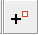
presets button. Paste the coordinates here and press Ok. You should now see power towers that are not mapped at the end of a unfinished transmission line. - ⚠️ Important : If you used the
add nodetechnique, delete the node you added right away usingUndo Sequence, to not upload a random node used to move around quickly. , Control+Z, or by selecting it and pressing Delete. - To extend or create a line, press
Draw Line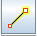
(left toolbar) orAon your keyboard, and click on the last tower symbol at the end of the unfinished power line. You should now be able to extend the line. - Look for the next power tower you can find and click on its footprint.
- If you ever feel unsure about how the line runs, just place towers without the lines. By adding power towers you can do nothing wrong. Adding power towers is the easiest way to get started. To do this you can click on an existing tower and
CTRL+Cand then press on where an unmapped power tower is andCTRL+V. - Continue the power line to the best of your ability.
- Once finished, select your line and press CTRL+Shift+N. This will select all of the nodes on the line.
- Then press CTRL+F to open the Search bar.
- In the Search string bar above, type
child selected type:node AND untagged. - ⚠️ In the Results tab on the left, check
Find in selection. ⚠️ - Press
Search. All untagged nodes in your line will now be selected. - Apply the
Power Tower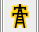
preset from the toolbar, followed byApply Preset. Now all the nodes you have placed are correctly tagged asPower Tower. - Bonus. Are you mapping with someone else, and/or does the data frequently change? Do you want to update your data in the Editor with the latest tags and extended lines added to OSM since you loaded your data, without loading everything again? By pressing
CTRL+U, you can update existing geometries and update all the tags, but be aware that completely new geometries and objects that are not connected to existing geometries will not be updated.
Pay attention to what you select and upload
⚠️ When applying presets, make sure you only select the untagged nodes of your line. If you accidentally select all untagged nodes in the country and tag them with Power Tower, you will upload incorrect data to OSM and will need to revert your changeset.
7. Upload your Edits to OpenStreetMap 
- Whilst having the
Data Layeractivated, press the green arrow pointing upwards , which should open a new window.
, which should open a new window. - Another new window
Validation Resultswill appear in the right panel showing all the issues identified. Right-clicking on an issue will allow you to zoom in on it. Avoid ignoring this validation results. The only acceptable warning when uploading data isPossible missing line support node within power line. - In the upload window, please tick the
I would like someone to review my editstick box if your mapping has been strongly affected by uncertainties like low-quality satellite data, or if you are a beginner. Provide a brief comment such as#mapyourgrid Unfinished transmission line. Provide the imagery source layer you used by typingEsriorBingfor example. Once done and sure about your edits,Upload Changes. - You just mapped your First Good Line. Feel free to close more First Good Lines, but make sure you leave some for the others. You can use the Strategies we have provided to find your own unmapped line. To support our initiative, please use the #MapYourGrid hashtag in the comments when you upload a changeset.
8. Mapping Guidelines
OpenStreetMap provides detailed guidelines on mapping various types of power infrastructure, as well as on how to handle different edge cases. While you don't need to read all of these guidelines before you start mapping, you should be aware of their existence, as they will help you with complex mapping tasks involving power infrastructure and provide lots of examples.

- Power networks
- Power networks/Guidelines
- Power networks/Guidelines/Power lines
- Power networks/Guidelines/Substations
- Power generation/Guidelines
- Power generation/Guidelines/Hydropower
- Power generation/Guidelines/Solar plants
- Power generation/Guidelines/Geothermal plants
- Power generation/Guidelines/Wind farms
- Power generation/Guidelines/Thermal plants
- Power networks/Guidelines/Interconnector
9. Avoid these Common Mistakes 

Mapping is an iterative process and mistakes happen. This should not stop you from mapping; simply map what you can verify based on your skillset. If a tower, lines or attributes are missing, our quality assurance tool Osmose will automatically detect this. Read more about our Quality Assurance and Validation layers in OpenStreetMap, and how we build on top of them.
- Our tools focus on transmission grids, that’s why you might not see lines below 50 kV. To see already mapped lines below 50 kV or lines tagged with
power=minor_line, download the whole area you’re working on with the green arrow pointing down ⬇️. Even better, you can download a country on Map It 📍 with theTransmission+Distributionlayer activated. - When mapping, make sure to not go across the border of the country you’re working on (visible dashed neon pink lines). Otherwise, you may find yourself mapping something that already exists, but hasn’t been downloaded in JOSM. One of the strategies we have can help with this.
- Don’t map beyond your expertise. If unsure, leave it for experienced mappers or locals, make a fixme tag, or ask the community! If you ever feel unsure about where to place the lines, just focus on adding power towers. You can't go wrong this way. Adding power towers is the easiest way to get started.
- Double-check your selection before applying presets, particularly when selecting a great amount of opbjects. This avoids uploading wrong data to OSM and saves you the trouble of going back to clean-up later.
- As you are contributing on a thematic selection of OpenStreetMap data, visible features may be connected to hidden ones. When deleting some features, always check it isn't connected to anything by downloading OpenStreetMap data surrouding the area, with the help of the download button ⬇️ on top left corner.
For a safe mapping, we recommend you reading about good practices.
Note
⚠️ In some countries, mapping power lines is restricted. Always verify local guidelines, connect with the OSM local community first, or check out the local projects. If you can't find a local community, please send us an email and we will help you set up a local group.
⚠️ By following our Good practices for mapping, we collectively protect the integrity of the OSM platform, foster trust with communities, and unlock the power of open data for a more resilient and just energy future.
iD and Open Infrastructure Map Starter-Kit
On the road and spotted some some power towers, power plants, or substations near your place that are still missing and want to quickly map them yourself? This can be done on your mobile device or PC using the iD editor and Open Infrastructure Map. In this way, you can also correct voltages, circuits, or other errors you see in Open Infrastructure Map.

Power Towers In-Field Mapping
- Go to the Open Infrastructure Map.
- Click Find my location in the top-right corner or search for your city.
- Zoom in until you see the small
Editbutton in the lower right corner and press it. - Create an OpenStreetMap account. Switch to the
Editmode by pressing the button on the top panel. - You will now see all OpenStreetMap data with
BingorESRIsatellite imagery underneath. Depending on your region, you might want to switch to different satellite imagery by pressing theBackground Settingbutton in the right panel. - By pressing the
Pointsymbol in the upper panel, you can now place a node. Now tag this node as a Power Tower using theEdit Featurethat will appear on the left side. Although filling out the other fields is optional, you are welcome to provide additional information if you know more about the type of power tower. - Use the shortcut
CTRL+Cto copy the tower, then place more power towers where you can see them. - Upload your data by pressing
Save. On mobile devices, you first have to hide the left window by toggling theInspectbutton at the top. - Add a
Changeset Commentwith a brief description of your mapping activity. If you find our efforts, documentation and tools helpful, please include the hashtag#mapyourgridin the changeset comment to let us know.
Substations and Power Plants
{kind=link}
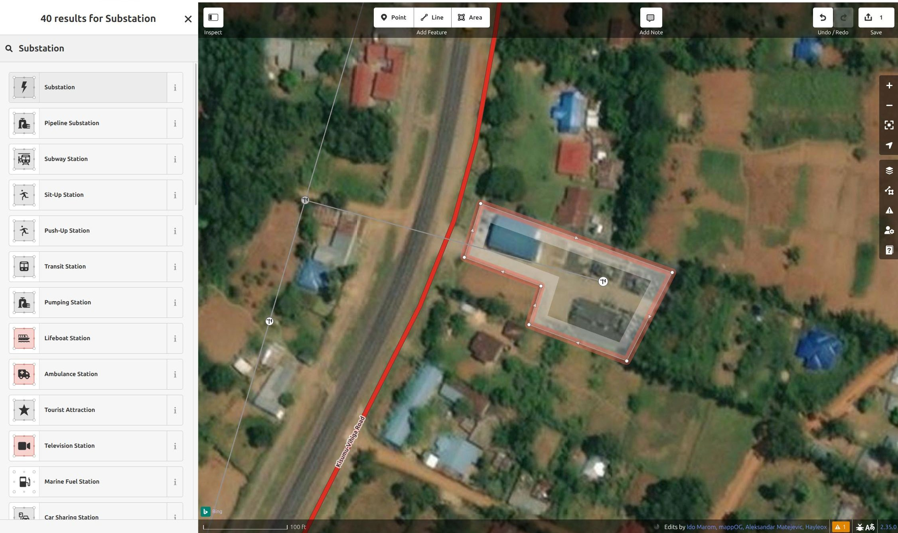
{kind=link}
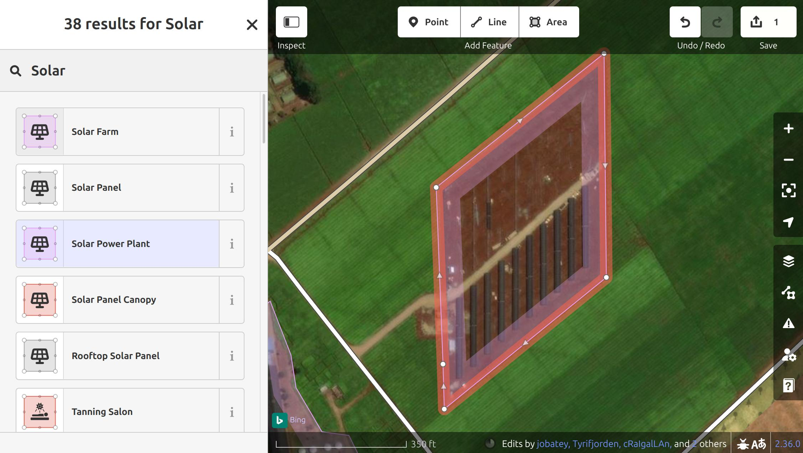
Once you have finished your transmission line, you will most likely find a substation at the end, and sometimes a power plant will even be located next to it. Therefore, mapping the transmission grid is an effective way of identifying new power plants. Photovoltaic power plants, in particular, are increasing significantly around the world and can be easily identified in satellite imagery.
- Go to the Open Infrastructure Map.
- Click Find my location in the top-right corner or search for your city.
- Zoom in until you see the small
Editbutton in the lower right corner and press it. - Create an OpenStreetMap account and log in.
- By pressing the
Areasymbol in the upper panel, you can now mark the substation. Tag this area as aSubstationusing theEdit Featurethat will appear on the left side. Add voltages, operators, or other fields if you have this information. - Now upload this information by pressing
Save. - Add a
Changeset Commentwith a brief description of your mapping activity. If you find our efforts, documentation and tools helpful, please include the hashtag #mapyourgrid in the changeset comment to let us know. - Bonus: While grid mapping, you will also find many power plants located next to substations and transmission lines. These are mapped in a similar way to substations, using the
Areasymbol.
If you want to try and find missing power plants in a country and map them, you can use the Global Energy Monitor or Wikidata tool in the MAP IT📍 page.
- Select the Global Energy Monitor or Wikidata button, and press on a country. This will download a file with all powerplants from those datasets.
- You can then add this in iD by dragging and dropping the file, or adding it in
Custom Map Data. - You can then go through the different power plants and check if they are mapped in OpenStreetMap.
Find open-ended transmission lines with Osmose
Have you finished your Good First Line and you want to find your own open-ended line in a country of your choice? With the help of osmose and our interactive MAP IT📍page you can find even more open ended lines.
{kind=link}
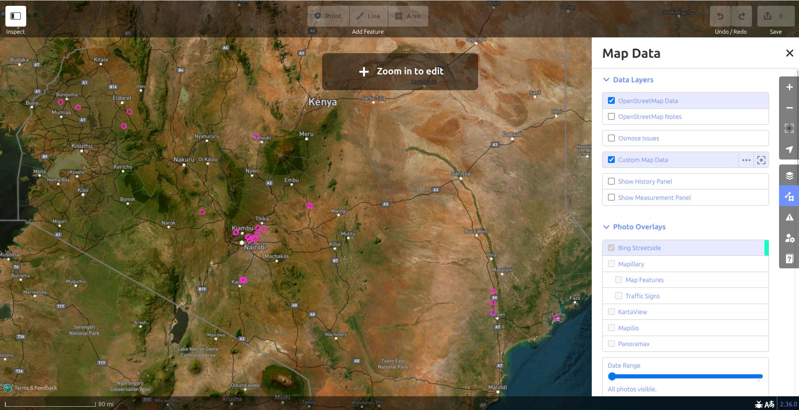
- Go to the MAP IT📍page.
- Press on
iD Editor, and then press on the Osmose hint layer button. - Choose one of the Osmose issue types, and then press on a country. This will fetch up to 5000 Osmose issues for that country and issue type.
- A URL will appear which you can copy.
- Go to the iD Editor, and then press on
Map DataorUon your keyboard. - Press on the three dots next to
Custom Map Data, and paste the copied URL and press OK. - You should now see all the issues (pink dots) at a high zoom level, and you can manually zoom in to each one to see if you can fix the issue. Unfortunately, iD does not allow these data to be processed systematically. To address these osmose issues and enable large-scale mapping across a country, we therefore recommend our JOSM workflow.
Report Issues in the Grid
{kind=link}
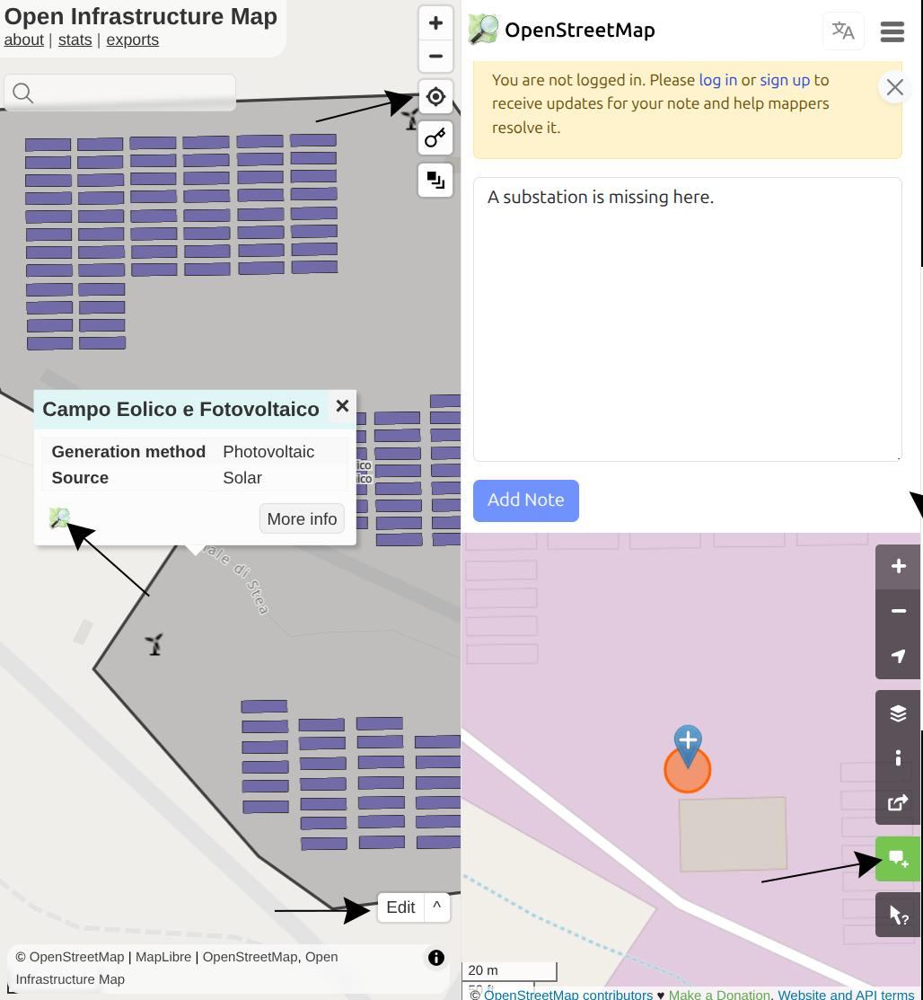
The fastest and easiest way to contribute to your electrical grid is by adding notes where you see missing or incorrect information in OpenStreetMap. You can do this fully anonymously with no login required.
- Go to the Open Infrastructure Map.
- Click Find my location in the top-right corner or search for your city.
- Click on the substation, power tower, power line, or power plant where you'd like to report an issue.
- In the description window, click the OpenStreetMap logo.
- The OpenStreetMap.org interface will now open at that location.
- Click the Add a note to the map button on the right-hand panel.
- Add a short description of the issue, and include the hashtag
#mapyourgridso we can find your note.
Reporting such smaller issues will significantly improve the long-term quality of your local grid's data.
MapComplete Starter-Kit

{kind=link}
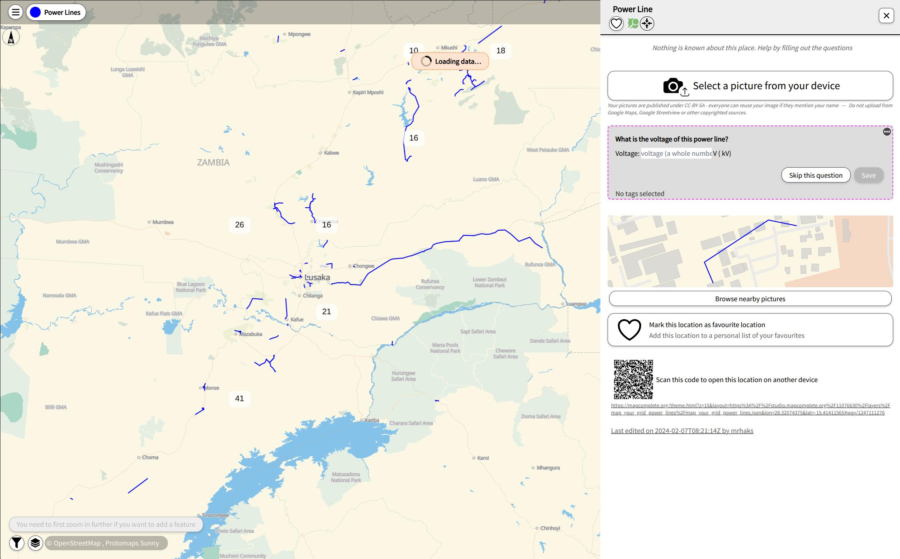
The MapComplete platform provides an easy way to identify missing tags of already mapped infrastructure where addtional information is missing. Like iD, the platform can be used from a PC but also from a mobile device. You can download the official MapComplete App from the Google Play Store, or use the web app on other mobile devices. One of the key features of MapComplete is the ability to upload pictures taken on mobile phones. This enables inexperienced field mappers to take pictures of power towers, which experts can then use to derive information such as voltage and the number of circuits.
-
Map of missing voltages of power lines: Voltages are essential for estimating the total power that can be transmitted by a power line. MapComplete supports the mapping of this missing tag by editing the data in the Power Lines MapComplete Layer. Once you click on the blue lines to make changes, in the right pane you notice that there is an option to upload an image of a power tower. You can still contribute by providing an image of the power tower. This will be uploaded to MapYourGrid, where other technical mappers can use the insulators to derive the voltages.
-
Wind Turbine Power Output: Similar to power lines, the power of wind turbine can be estimate using a single picture. Maybe you are aware of other resources and methods to derive the power output of wind turbines. The Wind Power Generators layer enables you to map this missing tags.
-
Open the Power Lines MapComplete Layer or Wind Turbine Power Output
- Jump to your location using the crosshair symbol in the lower right corner.
- Search for wind turbines or power line in your region with missing information.
- Press on the wind turbine symbol or power line. You can now add the capacity or take a picture with your mobile device to let others derive the output power. Please be aware that we will need an image of a power tower to estimate the voltage.
- Afterwards, press
Save.
Still "On the Line" and Motivated to Continue?
Well done on making it this far! We are offering free, hands-on transmission grid mapping workshops to people who have tried the Starter-Kit. You are very welcome to join our community chat called 📍-mapyourgrid on the PyPSA-Earth discord channel. Here you can ask questions, and interact with the community. For mapping specific questions and to participate in our free personalized training, please join our 📍-mapyourgrid-support-and-training channel.
Check out our Strategies to learn how to find your own new lines and become a grid mapping expert! The OpenStreetMap Wiki pages The Power Network and Key:Power provide an overview of how to map different power infrastructure.
You are also welcome to join our community calls to find out more about the mapping process and our initiative. Simply participate in one of the public events listed in this calendar.
What else? Learn the Grid Basics
You don’t need to be a grid expert to start mapping, but a little knowledge helps! The following documents and materials will give you a basic understanding of how to map an electrical grid.
The Learning Curve is a YouTube channel that will help you understand the fundamental knowledge of the electrical grid. Here some video we recommend for grid mappers.
- Electrical Line Supports - Transmission Towers & Poles
- Components of Overhead Transmission Lines
- Comparison between HVAC and HVDC transmission system
We recommend the following documents for a deeper dive into the construction of the electrical grid and how it is designed, including the relationship between distance and voltage based on IEC 60071-2. Please keep in mind that different standards may apply depending on the country.
The following image illustrates the fundamental design of the electrical grid: Electricity Grids and Secure Energy Transitions

The neon green lines show the distribution grid of a city in Nigeria. The city's energy system is connected to other cities and regions by the orange and purple transmission lines. The circles show distribution and transmission substations. .